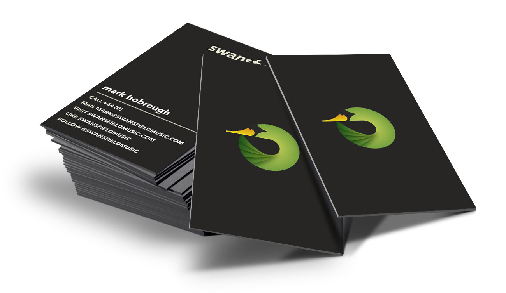
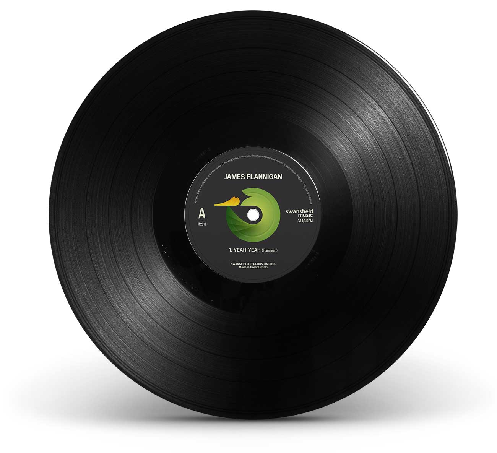
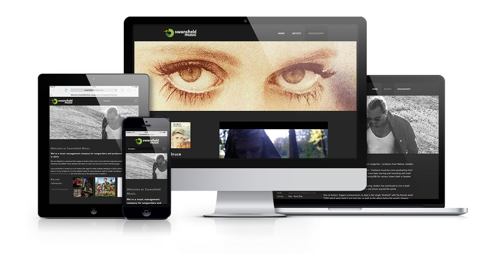
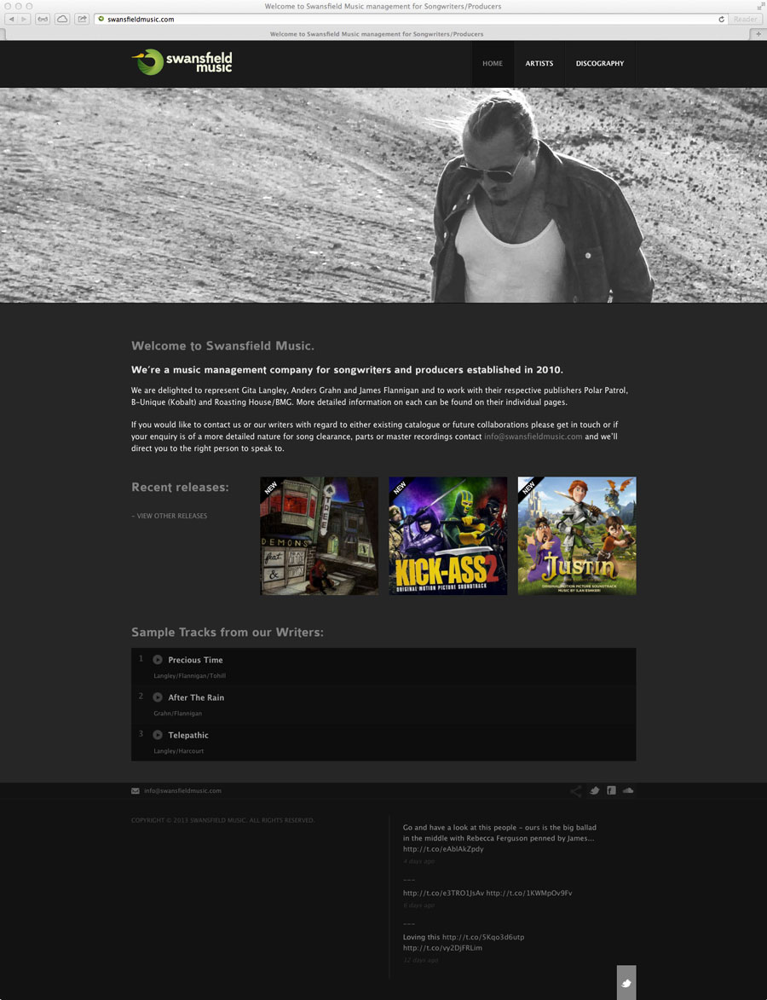

The Artist Management Agency, Swansfield Music, needed a rebrand.
Swansfield Music was home to several hit songwriters marketed to the Majors and Publishing Houses. However, their exisiting website was too basic and lacked any impact.
Before the website design, we made decisions about their branding that extended to a record label for vinyl releases.
The intent of the website was to have a landing page for each Artist's profile to share their content. It helped drive a lot of interest and helped one Artist to get a writing credit with Black Eyed Peas.